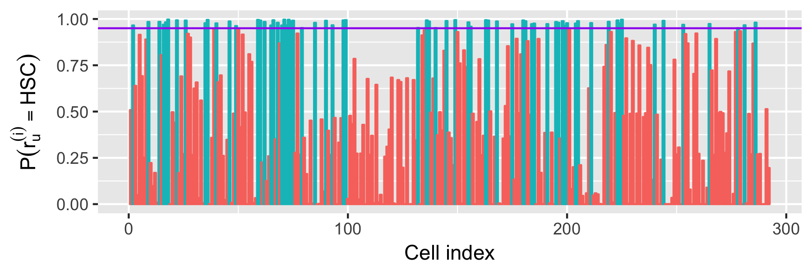

Lineage trees

Skylaki, Hilsenbeck & Schroeder,
Nature Biotech., 2016
Nature Biotech., 2016
- MPP root:

- HSC(?) root:


How can we use the respective emergent "shapes" of these trees to distinguish those rooted by an HSC from those rooted by an MPP?
Phylodynamics
- Term introduced by Grenfell et al. (Science, 2004)
- Refers to the interplay between "immunodynamics, epidemiology and evolutionary biology", and the effect this has on the shape of pathogen phylogenies.


Volz and Bedford, 2013
Phylogenetic fingerprinting

Grenfell et al., Science, 2014
"Phylodynamic" model for lineage trees
Define $\theta=(p_D^{HSC/MPP},p_A^{HSC/MPP},p_N^{HSC/MPP}, \lambda_D^{HSC/MPP},\lambda_A^{HSC/MPP},k_D^{HSC/MPP},k_A^{HSC/MPP},q_0,q_1,q_2)$
Bayesian inference and classification
Our model allows us to compute the following joint probability for a lineage tree and its potentiality states, conditioned on the root state $r$: $$P(T,A|\theta,r)$$
- Assume that we have $N$ lineage trees $T_u$ with unknown root type and $M$ trees $T_k$ with known root types.
- Parameters are shared between all trees, so the joint probability of all lineage trees and their poentiality states is: $$\begin{align} P(\vec{T}_k,\vec{T}_u,\vec{A}_k,\vec{A}_u,\vec{r}_u,\theta|\vec{r}_k) =& \left(\prod_{i=1}^N P(T_u^{(i)},A_u^{(i)}|\theta,r_u^{(i)})P(r_u^{(i)})\right)\\ &\times\left(\prod_{j=1}^M P(T_k^{(j)},A_k^{(j)}|\theta,r_k^{(j)})\right)P(\theta) \end{align}$$
- Bayes rule and marginalizing yields posterior for $\vec{r}_u$ and $\theta$.
Marginalizing over internal types
- Maximum of 7 cells/edges in 3-generation lineage tree.
- Allowing for unphysical transitions, maximum of 128 type configurations.
- In reality, far fewer. (E.g. half eliminated by considering only one configuration exists with MPP root cell.)
- Easy to marginalize over these configurations exactly!
Use MCMC to sample $P(\theta,\vec{r}_u|\vec{T}_k,\vec{T}_u,\vec{r}_k)$: posterior for unknown cell types.
Test data set
- Rich data set contributed by the Schroeder Lab, to appear in up-comming paper by Tanja Stadler, Stavroula Skylaki, Konstantinos Kokkaliaris and Timm Schroeder.
- Contains approximately 300 digitized lineage trees from cells with unknown potentiality (mixture HSC and MPP).
- A further 300 digitized lineage trees from cells with known potentiality (MPP).
- Used a single MCMC analysis to sample from the joint posterior of unknown root cell types and model parameters conditional on combined set of $\sim$600 lineage trees and known root cell types.
Results: Cell fate probability
Results: Lifetime scale parameter
Results: Lifetime shape parameter

Results: Cell type posteriors
- 67 of 292 "unknown" cells classified HSC with >0.95 posterior probability.
- Assuming 50% are actually HSC (and that the classification is correct), power is $\sim 0.46$.
Summary
- Phylodynamics inference methods are traditionally applied to infer aspects of the emergent population-level dynamics of pathogens.
- It seems that there is real scope to apply similar methods to the inference of single cell characteristics.
- In particular, a stochastic generative model of lineage tree formation appears capable of being used to classify the states of the member cells.
Future goals
- Validate inference method through:
- application to simulated lineage trees
- comparison with other statistical classification techniques (e.g. non-phylogenetic ML)
- independent testing of identified stem cells.
- Assess the potential for applying existing phylodynamic models (e.g. birth/death, structured population models) to the modelling of cell lineage trees.
Acknowledgements
- Stavroula Skylaki, Konstantinos Kokkaliaris and Timm Schroeder at the Department of Biosystems Science and Engineering, ETH Zürich for providing an amazing set of lineage trees. (Paper to appear soon.)